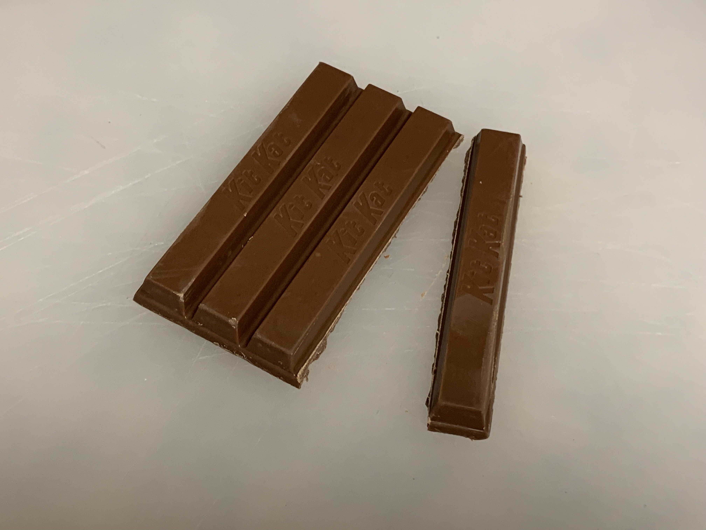
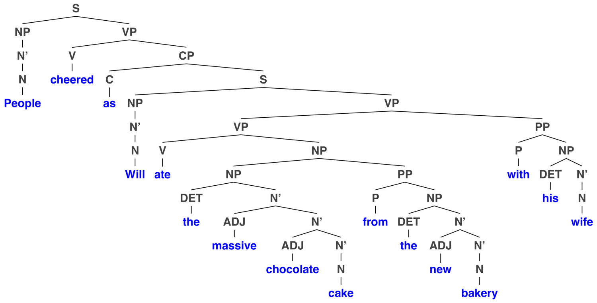

# Syntax for NLP ### Will Styler - LIGN 6 --- ### Today's Plan - Why do we need Syntax? - Constituency and Constituency Testing - Syntactic Hierarchy - Syntax Trees --- ### "Jony chased Dieter" <img class="r-stretch" src="img/fish_jonydieter.jpg"> --- ### English uses word order to mark who did what to whom. * "Will ate the veggie burger." * "Jony chased Dieter" * "Dieter chased Jony" * "Will waved to Hagyeong" * "Will insulted Michael Bay" --- ### ... and if we screw it up, that's a problem - *Ate Will the Veggie Burger - *Jony Dieter Chased - *Will Burger Veggie Ate --- ### ... and then things move around - "Will ate the veggie burger" - "Will ate it" - "Will ate what?" - "What did Will eat?" - *"What did Will eat it?" --- ### ... and things get ambiguous - "Will likes ambiguity more than most people" - "Will likes ambiguity more than most people do" - "Will likes ambiguity more than he likes most people" --- ### Clearly, it's complicated - ... and this is why we have... --- # Syntax! --- ### Syntax is the study of the structure of sentences and utterances - "What determines the order and arragement of words in sentences?" - "What orderings and arrangements are grammatical in a language?" - "How do we identify the meaning of words given their ordering?" - "How does the ordering within a sentence change in contexts?" --- ### Let's start from the basics --- # Constituency --- ### Syntactic Constituent A group of words which 'go together' in the structure of the sentence - *Constituents are always a continuous string of words* - No skipping words, these are continuous chunks! --- ### Constituents are chunks that, when split off, make sense --- ### We have intuitions about how things can be split --- ### We know what breaks are "good"  --- ### ... and we know that even if other breaks are possible... --- ### They shouldn't always be done --- ### Let's break me off a piece of that syntactic structure! --- ## Constituency Testing --- ### Constituency Testing Using grammatical tests and manipulations to determine whether something is a valid constituent - "Can this chunk be swapped for something else?" - "Can this chunk form a standalone answer?" --- ## Constituency Test: Substitution Can you replace that element of the sentence with a placeholder? - Any time you can replace a chunk of sentence with something else, it's a constituent --- ### The indignant kitten eyed my veggie burger with disgust yesterday at dinner - **He** eyed **it** - The indignant kitten **did so**. - The indignant kitten eyed **what** with digust **when**? - The kitten eyed my veggie burger **how** yesterday at dinner? - The **obligate carnivore** eyed my **dinner** with disgust **then** - *There are other chunks we can't isolate like this* - [The indignant kitten eyed my] --- ### Good substitution testing words - Wh-words (who, what, where, when, how, why) - Pronouns (he, it, her, them, they, that) - Adverbs of Place and Time (then, there) - "Do so" --- ### If you can replace something with a placeholder, it's a constituent - ... and if you are unable to, it's not a constituent! --- ### This is important for coreference in NLP? - What does 'it' refer to in "The angry dog ate John's moldy sandwich. It was disappointed." - 'It' can replace 'the angry dog' or 'John's moldy sandwich' but not 'the dog ate' - 'Which complete constituent of a prior sentence does this thing refer to?' --- ## Constituency Test: Standalone Answers - A string of words that can be the answer to a WH question is a constituent --- ### Robert the Enchiladaholic thoughtlessly purchased a $1000 gift card to Chiquita's Mexican Restaurant last week. - "Who bought the gift card?" - "What did he buy?" - "Where was the gift card to?" - "When did he buy it?" - "What did Robert do?" - "How did he buy it?" --- ### If a chunk can serve as the standalone answer to a question, it's a constituent - "What can a chunk that's a constitutent do?" --- ### This is crucial for question answering in NLP - We want these systems to give us full chunks in response to questions - "Who owns the crown jewels?" "The Queen" - "Which light is on, the living room or kitchen light?" "The light is on." - "What did Raul do on Friday?" "He went." --- ### So, those are some ways that we evaluate constituency - There are many more! - Let's test it out --- ### What is *not* a constituent in "Michael and Karla founded an innovative new dermatology company last month"? --- ### What do we call these constituents? - We name them after the *head* of the phrase --- ### The angry squirrel stole the mixed nuts from Walmart - [The angry squirrel] - 'Noun Phrase' (NP), headed by a noun - [stole the mixed nuts from Walmart] - 'Verb Phrase' (VP), headed by a verb - [from Walmart] - 'Prepositional Phrase' (PP), headed by a preposition. - [The angry squirrel stole the mixed nuts from Walmart] - The Sentence (S) --- ## Constituency is *really* important - We seem to 'understand' it as language speakers - Syntactic rules make constant reference to constituents - We're pretty sure that whatever syntax is in the mind, constituency is a part of it - So, thinking about constituency is going to be constant --- "OK, OK. We get it. Constituency is a thing." - ### ... but where the heck does it come from?! --- ### Language is hierarchical - Words combine into phrases/constituents - Phrases combine to form bigger phrases. - Phrases combine to form sentences. - Phrase structure rules show how words/phrases combine to form larger phrases/sentences. --- ### We can't treat sentences as 'flat' and find constituency <img class="r-stretch" src="diagrams/tree_angrysquirrelflat.jpg"> --- ### But if we think about it hierarchically... <img class="r-stretch" src="diagrams/tree_angrysquirrel.jpg"> - ### BOOM! Constituency. --- ### We need to go deeper... <img class="r-stretch" src="diagrams/tree_angrysquirrelfull.jpg"> --- ### Or maybe... <img class="r-stretch" src="diagrams/tree_angrysquirrelfullalt.jpg"> --- ### Syntax Trees - A representation of the hierarchical structure of sentences, capturing constituency. - Derived from a finite set of rules which dictate the ordering of components --- ### I ate. <img class="r-stretch" src="diagrams/tree_iate.jpg"> --- ### I see you. <img class="r-stretch" src="diagrams/tree_iseeyou.jpg"> --- ### The dog chased the cat <img class="r-stretch" src="diagrams/tree_dogchased.jpg"> --- ### I saw the big, sweet dogs from La Jolla with fleas <img class="r-stretch" src="diagrams/tree_dogs_long.jpg"> --- ### Trees express syntactic structure independent of specific words <img class="small" src="diagrams/tree_dogchased.jpg"><img class="small" src="diagrams/tree_dogchased_alt.jpg"> --- ### Linguists build these trees using lists of 'phrase structure rules'. - This constituent is made up of these subparts - S -> NP VP - NP -> DET N' - N' -> N - VP -> V NP - ... and many more --- ### Olivier ran a discussion section Friday <img class="r-stretch" src="diagrams/tree_101sc_olivierran.jpg"> --- ### The stuffed kittens plotted revenge in an empty quiet apartment --- ### Her incessant desire for enchiladas consumed her every waking thought ---  --- --- ### This is a *generative* way of doing syntax - Good rules can generate all of the grammatical and 'good' forms - ... while generating none of the ungrammatical, 'bad' forms - This is great for linguistics and the idea of grammar - ... and makes some parts of the syntactic process much easier --- ### ... but there's a LOT of machinery here - Which all depends on having a smoothly functioning grammar - ... and creates a lot of structure, which may not all be needed - So we'll talk about the approach more commonly used in NLP soon! --- ### Wrapping up - We know that languages can use word order to understand what went on - We know that there's more to it than ordering - We know that constituents of sentences are a thing - ... and that they're derived from hierarchy in sentences - We can read tree diagrams to understand the nature of that hierarchy --- ### Next time - We'll dive into POS tagging and teaching computers to find lexical categories --- <huge>Thank you!</huge>